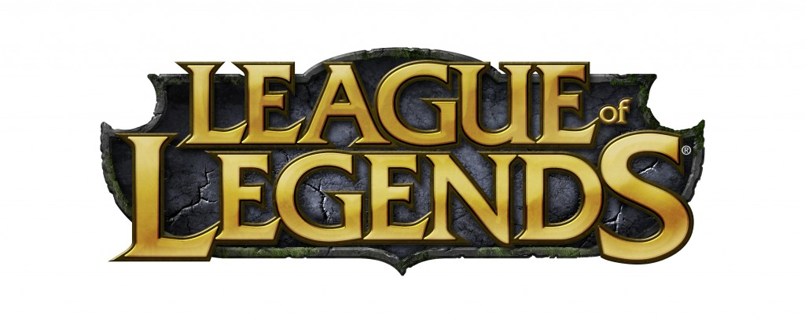

PROJECT- Alpha Strike

League of Legends (LoL) is a multiplayer online battle arena, real-time strategy video game developed and published by Riot Games, for Microsoft Windows and Mac OS X. It is a free-to-play game supported by micro-transactions and inspired by the mod, Defense of the Ancients for the video game Warcraft III: The Frozen Throne.
In League of Legends, players assume the role of an unseen "summoner" that controls a "champion" with unique abilities and battle against a team of other players or computer-controlled champions. The goal is usually to destroy the opposing team's "nexus", a structure which lies at the heart of a base protected by defensive structures. Each League of Legends match is discrete, with all champions starting off fairly weak but increasing in strength by accumulating items and experience over the course of the game.
League of Legends was generally well received at release, and it has grown in popularity in the years since. By July 2012, League of Legends was the most played PC game in North America and Europe in terms of the number of hours played. As of January 2014, over 67 million people play League of Legends per month, 27 million per day, and over 7.5 million concurrently during peak hours.
League of Legends has an active and widespread competitive scene. In North America and Europe, Riot Games organizes the Championship Series, which consists of 10 professional teams in each continent. Similar regional competitions exist in China, South Korea, Taiwan, South America, and Southeast Asia. These regional competitions culminate with the annual World Championship, which in 2013, had a grand prize of $1 million and attracted 32 million viewers online. The 2014 tournament had one of the largest prize pools in esports history, at 2.3 million dollars.